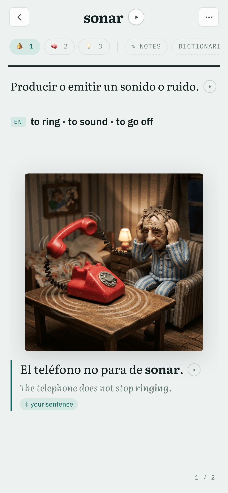
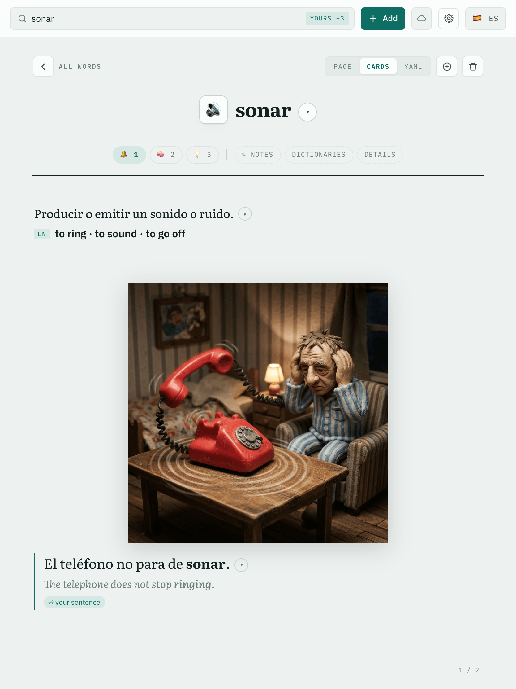

Reads offline, writes onlineA save is one round trip to the server and fails visibly without it. Only the server numbers a change, so there is nothing to merge.
Installed, not hostedA web app on Android and iOS and a native window on macOS, served from your own machine.